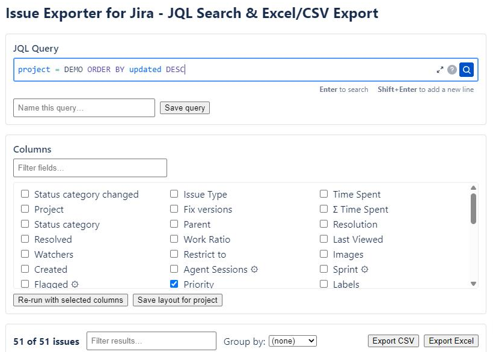
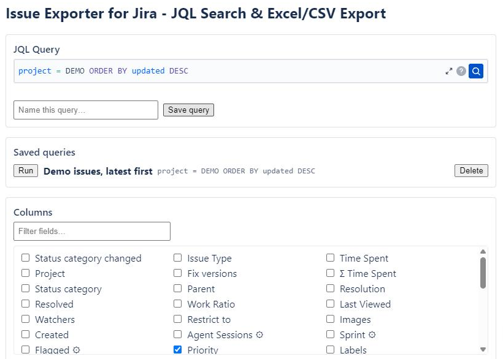
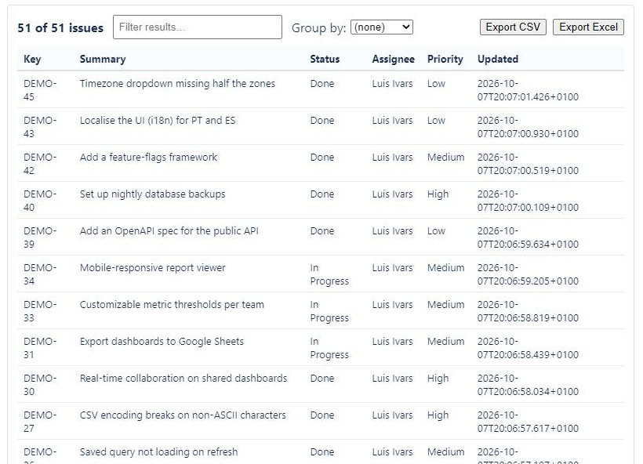

Issue Exporter runs Jira's native JQL editor with full autocomplete for fields, operators and values, so you can find exactly the issues you need. Load the results into a table, choose which columns to include, and export to CSV or Excel in one click.



Issue Exporter adds a tab to your Jira project. Type a JQL query in the same editor Jira uses, with autocomplete, and the matching issues load into a table.
Choose exactly which columns to include: summary, status, assignee, priority, dates, story points or any custom field your search returns. The table shows the columns you selected and the export mirrors it, so what you see is what you get.
Download the current results as CSV or Excel (.xls). The files are generated in your browser: there is no external server, no vendor backend, and no issue data leaves Atlassian.
Save named JQL queries and a column layout per project, and run your most-used exports again in one click.
Built on Atlassian Forge with minimal scopes (read:jira-work and storage:app), which keeps the app eligible for the Runs on Atlassian program. Works with company-managed and team-managed projects on Jira Cloud and Jira Service Management. Language support: English.
Run any JQL query through Jira's own editor, with full field, operator and value autocomplete, then run it again in one click.
The results table shows the columns you selected, and the export mirrors it exactly: no stale data, no extra fields, no mismatched query.
Download the current results as CSV or Excel (.xls). No external server, no vendor backend, and no issue data leaving Atlassian.
Save named JQL queries and a column layout per project, so the exports you repeat every week take one click.
Does this app send my Jira issue data to an external server?
No. The search uses Jira's own REST API, the table is drawn in your browser and the CSV or Excel file is generated there. The app has no external server and makes no external network calls.
Can I choose which fields appear in the export?
Yes. Under Columns, tick the fields you want, including custom fields, and select Re-run with selected columns. The export contains exactly those columns.
Which file formats can I export?
CSV and Excel (.xls). Both open directly in Excel, Google Sheets and other spreadsheet tools.
Can I reuse a search?
Yes. Give the query a name and select Save query. It then appears under Saved queries with a Run button. Save layout for project keeps your column selection.
Can I schedule recurring exports?
Not yet. The app is focused on fast, accurate, on-demand exports.
Which issues can I export?
Any issues your JQL query returns and that you already have permission to see in Jira, in company-managed and team-managed projects.
The app reads Jira data with the permissions of the person using it, and only:
Everything runs on Atlassian Forge and no data leaves Atlassian. Details in the privacy policy.
For questions, issues, or feature requests: